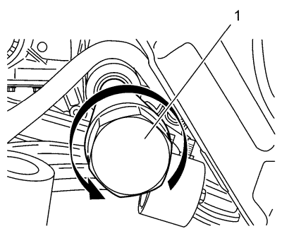
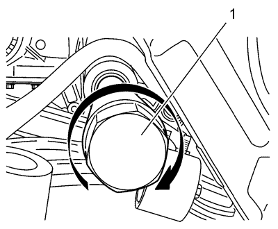

Sustitución de la barra de acoplamiento interior del varillaje de la dirección — Dirección asistida electrónica
Herramientas especiales
Herramienta de desmontaje y montaje de la barra de acoplamiento interior del varillaje de la dirección CH-6247
Si desea informarse sobre herramientas regionales equivalentes, consultar Herramientas especiales .
Procedimiento de desmontaje
- Elevar el vehículo y soportarlo de manera segura. Consultar Elevación y soporte en alto del vehículo .
- Desmonte la rueda del vehículo. Consultar Desmontaje y montaje de la rueda y el neumático .
- Retire la barra de acoplamiento de unión a la dirección. Consultar Sustitución la barra de acoplamiento exterior del varillaje de la dirección .
- Retire el fuelle del mecanismo de la dirección. Consultar Sustitución del fuelle del mecanismo de la dirección .

- Desmonte la barra de acoplamiento interior del varillaje de la dirección (1) con la herramienta de desmontaje y montaje CH-6247.
Procedimiento de montaje

- Aplique un compuesto de bloqueo de roscas a las roscas de la barra de acoplamiento interior (1).
Precaución:Consulte Precaución con las fijaciones en la sección Prólogo.
- Monte la barra interior del varillaje de dirección con la herramienta de desmontaje y montaje CH-6247 y apriétela a 105 N·m (77 lib. pies).
- Monte el fuelle del mecanismo de la dirección. Consultar Sustitución del fuelle del mecanismo de la dirección .
- Monte la barra de acoplamiento de unión a la dirección. Consultar Sustitución la barra de acoplamiento exterior del varillaje de la dirección .
- Monte el conjunto de neumático y llanta. Consultar Desmontaje y montaje de la rueda y el neumático .
- Mida la alineación de las ruedas. Consultar Medición de la alineación de las ruedas .
- Ajuste la alineación de las ruedas delanteras. Consultar Alineación de las ruedas - Ángulo del volante de dirección y/o ajuste de la puntera frontal .
- Centre el sensor de ángulo de giro. Consultar Centrado del sensor de ángulo de giro .
| © Copyright Chevrolet. Reservados todos los derechos |